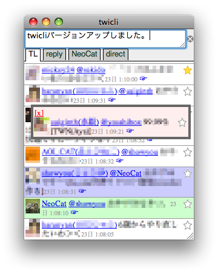

twicli


twicliはWebブラウザー上で動くTwitterクライアントです。
- Webブラウザ上で動くのでインストール不要です。
- タイムラインを随時、自動的に取得してアニメーション表示していきます。
- 専用サーバなどは介さず、クロスドメインJavaScriptで直接Twitterにアクセスします。パスワード等がTwitter以外に送信されることはありません。
ネットカフェで他事しながらTwitterを眺めたいときなどに便利かも。
今のところFirefox, Safari, Operaで動いています。
iPhone/iPod touchのSafariでもOKです。
IE7・IE8でも、ステータスバーのプライバシーアイコンをダブルクリックし、手動でTwitter.comのCookieのブロックを解除すれば、一応動作するようです。
※タイムラインの更新だけを取得したい場合は軽量なsimpleバージョン(旧バージョン)もあります。
使い方
まあ使ってみたら何とかなる?- 起動
- 上のリンク(bookmarklet)をクリック、またはブックマークにD&Dで登録して選択すると、別窓で起動します。
- 認証を求められた場合は、Twitterのアカウント／パスワードを入力してください。
- タイムライン表示
- タイムラインはホイールでスクロール(最大500件)
- ユーザ名をクリックするとユーザ情報や発言を表示
- ユーザのアイコンをクリックするとプロフィールのWebページへジャンプ(設定されている場合のみ)
- 「☞」をクリックすると、返信先を次々と辿っていくことができます。一覧に無い場合も返信先をオーバーレイ表示します。
- ユーザのTLの最後に▽が出ている場合、クリックすると過去の発言を取得します。
- 発言／fav
- 最上部のフィールドにテキストを入力してenterキーで発言
- 「↩」をクリックすると「@ユーザ名」を自動入力 & 発言の返信先を設定。
- twit右の「☆」をクリックするとfav追加。「★」を再度クリックでfav解除。
- タブ (TL: タイムライン、Re: あなた宛のつぶやきを表示、D: ダイレクトメッセージ)
- TL以外は自動でアップデートされません。更新するには再度タブをクリックしてください。
- 他のタブに切り替えている間もTLは更新されていきます。
- ユーザ別タブ (発言中の「@〜」をクリック、または「+」タブでユーザ名を入力)
- プロフィールや過去の発言を表示します(自動更新はしません)。自分の情報も表示できます。
- [Twitter]: 本家Twitterのユーザページへ
- [fav]: その人がつけたfavを表示 (自分も可)
- follow/remove: フォローを開始または解除
- [search]: ユーザに関連する発言を公式検索で検索(search.jsプラグイン有効時)
- 「+」タブ (オプション設定、プラグインによる拡張機能など)
- Preferences: クリックすると各種設定が行えます。
- max #msgs in TL: 表示する最大発言数です。以下より大きい数にしてください。
- #msgs in TL on update: TL更新時に1度に取得する発言数を指定します。
- #msgs in user on update: ユーザ別タブの更新時に取得する発言数を指定します。
- Plugins: こちらを参照。
- Pickup Pattern: ID/発言内容を元に抽出タブを作れます(regexp.jsプラグイン有効時)。詳しくはこちらを参照。
- Twitter search: 公式検索でキーワードを検索(search.jsプラグイン有効時)
- Twitter検索: Twitter検索(yats)でキーワードを検索(search2.jsプラグイン有効時)
- Preferences: クリックすると各種設定が行えます。
なお開発途上なので随時アップデートすることがあります。
ソース
twicli.htmlが本体(HTML+CSS+JavaScript)。他にプラグイン、画像ファイルが要ります。
開発はCodeRepos上で行っています。
パッチや勝手にコミット大歓迎です。なお、ライセンスはMITライセンスです。
不具合／要望などは私に@を飛ばして頂くと対応するかもしれません。